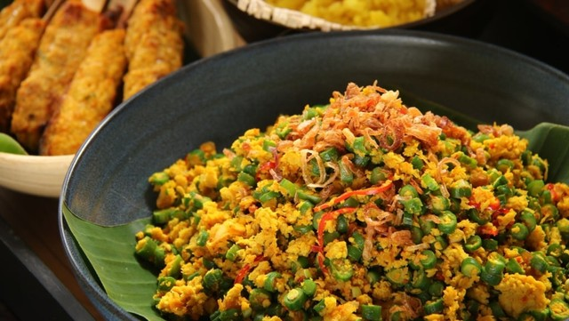
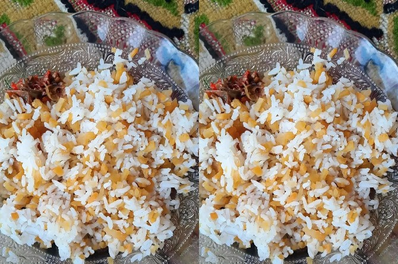

Terpesona dengan Keindahan Nusa Penida, Jangan Lupa Mencicipi Kuliner Khasnya yang Menggoda Selera
Nusa Penida memang terkenal dengan keindahan alamnya yang memukau, mulai dari pantai pasir putih, tebing-tebing karang yang menjulang, hingga gua-gua yang menakjubkan. Namun, selain keindahan alamnya, Nusa Penida juga menyimpan kekayaan kuliner yang tak kalah menarik. Jangan lewatkan kesempatan untuk mencicipi kuliner khas Nusa Penida yang menggoda selera saat kamu berkunjung ke sana. Dalam artikel ini, kita akan membahas beberapa makanan dan jajanan khas Nusa Penida yang wajib dicoba saat liburan di pulau yang mempesona ini. Siap untuk menjelajahi wisata kuliner Nusa Penida?
#1. Lawar

Lawar adalah makanan khas Nusa Penida dan Bali yang terbuat dari daging babi atau ayam yang dicincang halus dan dicampur dengan bumbu rempah seperti cabai, bawang putih, dan garam. Lawar biasanya disajikan dengan nasi putih, sayuran, dan sambal. Ada dua jenis lawar yang dapat dicoba di Nusa Penida, yaitu lawar merah dan lawar putih. Lawar merah dibuat dengan menggunakan darah babi, sedangkan lawar putih dibuat tanpa menggunakan darah.
#2. Sate Lilit Ikan
Sate Lilit Ikan adalah sate khas Nusa Penida yang terbuat dari daging ikan yang dihaluskan, dicampur dengan rempah-rempah seperti kemiri, kunyit, dan bawang putih, kemudian dibentuk melingkar pada batang serai atau bambu. Sate Lilit biasanya disajikan dengan nasi putih, sayuran, dan sambal. Rasanya yang gurih dan pedas membuat sate lilit menjadi salah satu kuliner khas Bali yang sangat disukai oleh wisatawan.
#3. Bebek Betutu

Bebek Betutu adalah salah satu kuliner khas Nusa Penida. Bebek Betutu adalah bebek yang dipanggang dengan bumbu khas Bali yang terbuat dari rempah-rempah seperti kunyit, bawang putih, jahe, dan cabai. Bebek ini kemudian dibungkus dengan daun pisang dan dipanggang selama beberapa jam hingga matang sempurna. Bebek Betutu biasanya disajikan dengan nasi putih dan sayuran, serta sambal untuk menambah cita rasa.
#4. Bubur Ledok
Bubur ledok adalah salah satu makanan khas dari Pulau Nusa Penida, Bali yang terbuat dari beras ketan, santan kelapa, dan bumbu rempah yang diaduk hingga lembut dan tercampur rata. Makanan ini biasanya disajikan bersama dengan lauk pauk seperti ayam goreng atau sayur labu siam.
#5. Jukut Komak
Jukut komak, ikan pepes be awan, dan nasi cacah adalah makanan-makanan khas dari Pulau Nusa Penida, Bali yang juga layak untuk dicoba saat berkunjung ke sana.
Jukut komak adalah salah satu jenis masakan sayur-sayuran khas Nusa Penida yang terbuat dari daun pepaya yang direbus dan dicampur dengan bumbu-bumbu seperti bawang, cabai, dan terasi. Jukut komak memiliki rasa yang segar dan nikmat, cocok dijadikan sebagai pelengkap hidangan utama. Makanan ini biasanya dihidangkan dengan nasi putih dan lauk pauk seperti ayam atau ikan goreng.
#6. Ikan Pepes be awan
Ikan pepes be awan adalah hidangan ikan khas Nusa Penida yang dimasak dengan cara dipanggang atau dibakar dalam daun pisang dengan bumbu rempah yang khas. Ikan yang digunakan biasanya ikan segar seperti tuna atau kakap merah. Setelah dipanggang dalam daun pisang, ikan pepes be awan memiliki aroma yang harum dan rasa yang lezat. Ikan ini biasanya disajikan dengan nasi putih dan sambal sebagai pelengkap.
#7. Nasi cacah

Nasi cacah adalah hidangan nasi yang dicampur dengan bumbu kacang dan kemiri yang dihaluskan, disajikan dengan lauk seperti ayam atau bebek. Hidangan ini cukup unik karena bumbu kacangnya membuat nasi cacah memiliki rasa yang gurih dan sedikit manis. Nasi cacah juga biasanya disajikan dengan lalapan seperti mentimun dan tomat sebagai pelengkap.
Nusa Penida memang memiliki keindahan alam yang memukau, tetapi tak hanya itu saja yang bisa kamu nikmati saat berkunjung ke sana. Jangan lewatkan keseruan mencoba berbagai kuliner khas dan menjelajahi budaya unik dari masyarakat Nusa Penida. Bagi kamu yang tertarik untuk menjelajahi Nusa Penida, Bali Mutiara Tours menawarkan paket tour yang menarik dengan harga terjangkau. Nikmati sensasi liburan yang berbeda dengan Bali Mutiara Tours dan jangan lewatkan kesempatan untuk menjelajahi keindahan Nusa Penida bersama kami!